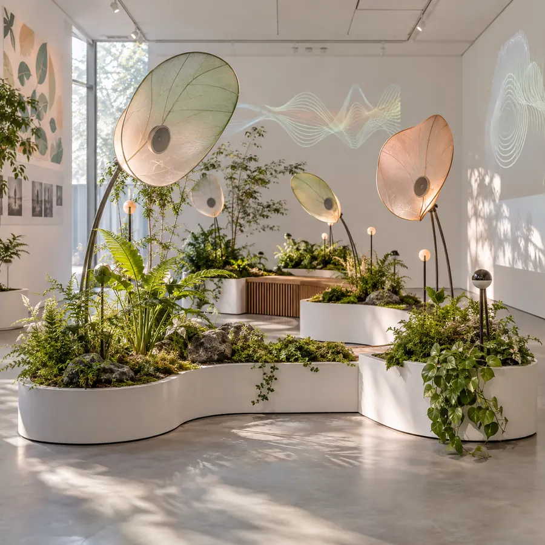
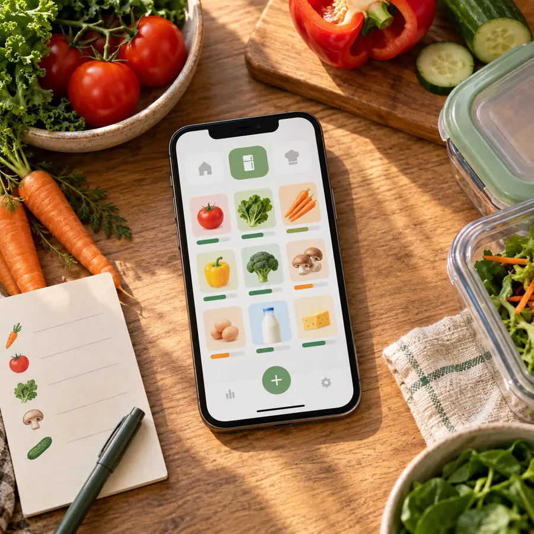

Showcase favoriteEcho Garden
● InstallationSound, sensors, and living plants respond to every visitor.
Student Multimedia Showcase 2026
Browse thoughtful apps, films, installations, and immersive experiences created by students of the College of Information Technology.
Every card opens a project story. Save the ones you want to revisit.
4 projects available

Showcase favoriteSound, sensors, and living plants respond to every visitor.

NewA mobile concept that turns food tracking into simple daily habits.
A hand-painted short about friendship, waiting, and finding a way home.
A calm VR environment guided by breath, color, and gentle movement.
Try another topic or return to the full collection.
A gentle giant rabbit is disturbed by three mischievous woodland creatures and plans a playful response. The animated film is dialogue-free, with music and expressive sound effects. Playback controls and hosted captions are available through YouTube.
One showcase, many ways to create
CIT Discover organizes multimedia work like a friendly creative marketplace: clear categories, useful project details, rich media, and simple interactions that work across desktop and mobile.
Search by topic, format, or audience without losing the full collection.
Heart buttons remember a shortlist on the same browser and device.
The featured film includes its creator, source, and open-use license.